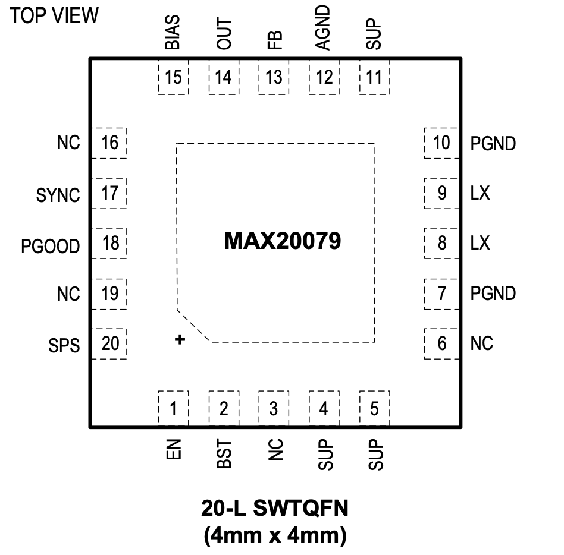
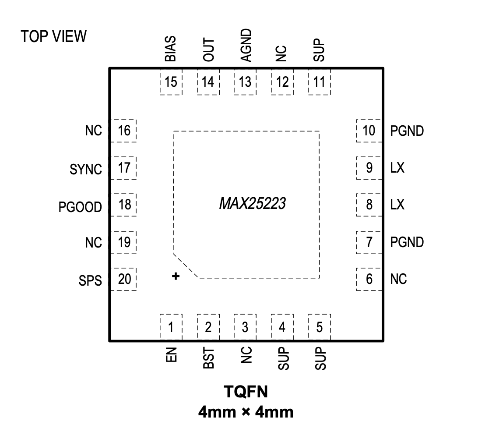

MAX20079

Pin Description
| PIN | NAME | FUNCTION |
|---|---|---|
| 1 | EN | High-Voltage-Compatible Enable Input. If this pin is low, the part is off. |
| 2 | BST | Bootstrap pin for HS driver. It is recommended to use 0.1μF from BST to LX. |
| 4,5,11 | SUP | Supply Input. Connect a 4.7μF ceramic capacitor from SUP to ground. |
| 8,9 | LX | Buck Switching Node. Connect inductor between LX and OUT. See the Inductor Selection section. If the part is off, this node is high impedance. |
| 13 | FB | Feedback pin. Connect a resistor-divider from the buck output to FB to ground for external adjustment of the output voltage. Connect FB to BIAS for internal fixed voltages. |
| 15 | BIAS | 5V Internal BIAS supply. Connect a 1μF (minimum) ceramic capacitor to ground. |
| 17 | SYNC | Sync Input. If connected to ground or left floating, skip-mode operation is enabled under light loads. If connected to BIAS, forced PWM mode is enabled. This pin has a 1MΩ internal pulldown. |
| 18 | PGOOD | Open-Drain Reset Output. External pullup required. |
| 3,6,16,19 | NC | No Connect |
| 20 | SPS | Spread-Spectrum Enable. Connect logic-high to enable spread spectrum of internal oscillator, or logic-low to disable spread spectrum. This pin has a 1MΩ internal pulldown. |
| 7,10 | PGND | Power Ground. |
| 12 | AGND | Analog Ground. |
| 14 | OUT | Buck Regulator Output-Voltage-Sense Input. Bypass OUT to PGND with ceramic capacitors. |
MAX25223

Pin Description
| PIN | NAME | FUNCTION |
|---|---|---|
| 1 | EN | High-Voltage-Compatible Enable Input. If this pin is low, the part is off. |
| 2 | BST | Bootstrap pin for HS driver. It is recommended to use 0.1μF from BST to LX. |
| 4,5,11 | SUP | Supply Input. Connect a 4.7μF ceramic capacitor from SUP to ground. |
| 8,9 | LX | Buck Switching Node. Connect inductor between LX and OUT. See the Inductor Selection section. If the part is off, this node is high impedance. |
| 15 | BIAS | 5V Internal BIAS supply. Connect a 1μF (minimum) ceramic capacitor to ground. |
| 17 | SYNC | Sync Input. If connected to ground or left floating, skip-mode operation is enabled under light loads. If connected to BIAS, forced PWM mode is enabled. This pin has a 1MΩ internal pulldown. |
| 18 | PGOOD | Open-Drain Reset Output. External pullup required. |
| 3,6,12,16,19 | NC | No Connect |
| 20 | SPS | Spread-Spectrum Enable. Connect logic-high to enable spread spectrum of internal oscillator, or logic-low to disable spread spectrum. This pin has a 1MΩ internal pulldown. |
| 7,10 | PGND | Power Ground. |
| 13 | AGND | Analog Ground. Connect it to PGND with a short and thick trace. |
| 14 | OUT | Buck Regulator Output-Voltage-Sense Input. Bypass OUT to PGND with ceramic capacitors. |